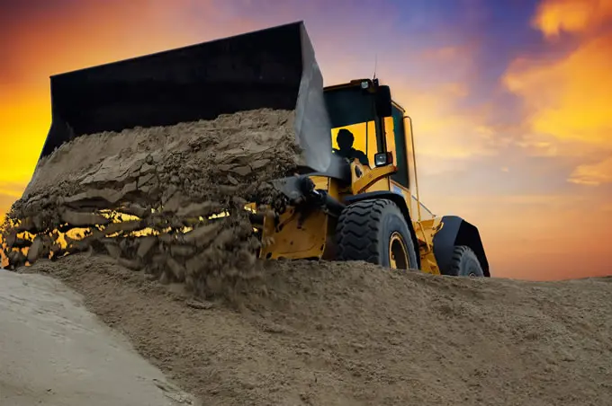

Segurança e Qualidade não tem preço!
Com mais de quinze anos de experiência no mercado de geotecnia, terraplanagem e pavimentação, a Labormig se destaca pela excelência técnica e pela qualidade dos serviços prestados.
Nossa equipe é composta por profissionais altamente qualificados, que combinam conhecimento técnico e experiência prática para garantir a satisfação de nossos clientes e um desempenho superior no mercado.

Como podemos te ajudar:
- Estabilidade de Encostas e Taludes
- Deslizamentos de Terra
- Erosão
- Fundações de Edifícios e Estruturas
- Assentamento Diferencial
- Capacidade de Carga
- Estabilidade de Barragens
- Infiltração de Água
- Obras Subterrâneas
- Escavação de Túneis
- Estabilidade de Escavações
- Remediação de Áreas Contaminadas
- Proteção de Aquíferos
- Pavimentação e Infraestrutura de Transportes